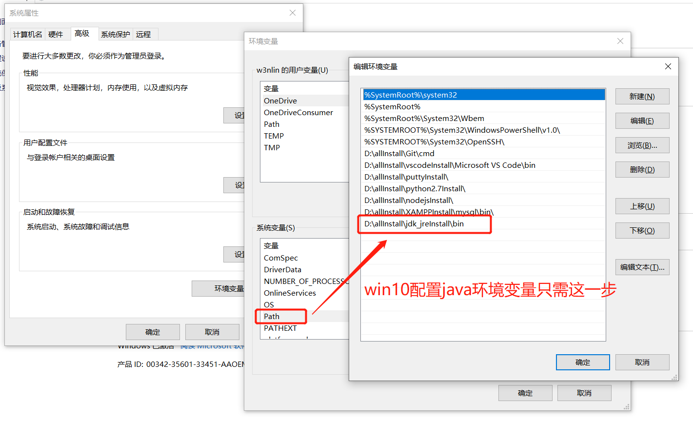
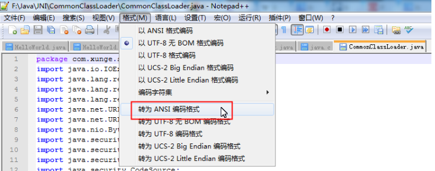
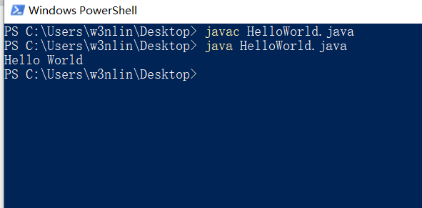

java_01
1.下载安装jdk
jdk下载地址: https://www.oracle.com/java/technologies/javase-jdk14-downloads.html 安装jdk的同时，jre一并被安装
2.配置环境变量
win10配置只需一个步骤

3.测试JDK是否安装成功
1、"开始"->"运行"，键入"cmd"； 2、键入命令: java -version、java、javac 几个命令进行测试
4.新建java文件
新建HelloWorld.txt文件,然后改名为HelloWorld.java
5.修改java文件编码
将文件编码转为ANSI编码,否则javac HelloWorld.java时会报编码GBK不是映射字符的错

6.书写java代码
public class HelloWorld {
public static void main(String []args) {
System.out.println("Hello World");
}
}
注:
1.类名首字母必须大写
2.类名HelloWorld必须与文件名HelloWorld同名
7.编译java文件
javac HelloWorld.java
8.执行java文件
java HelloWorld.java
